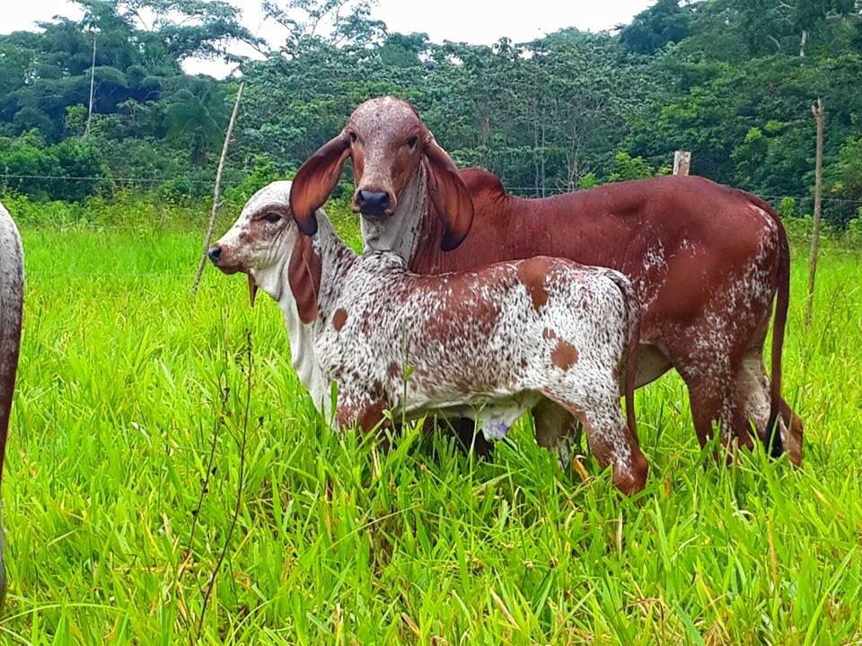
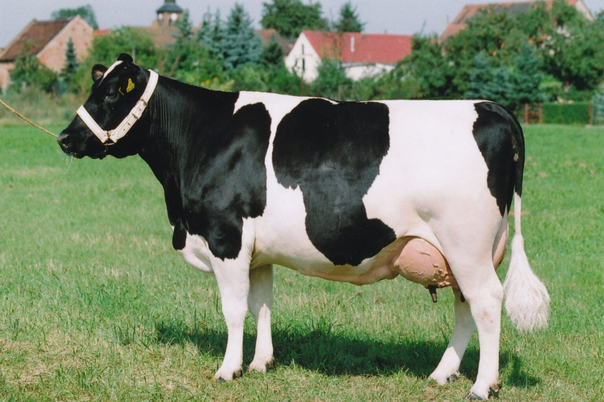
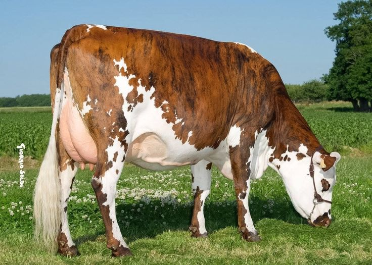
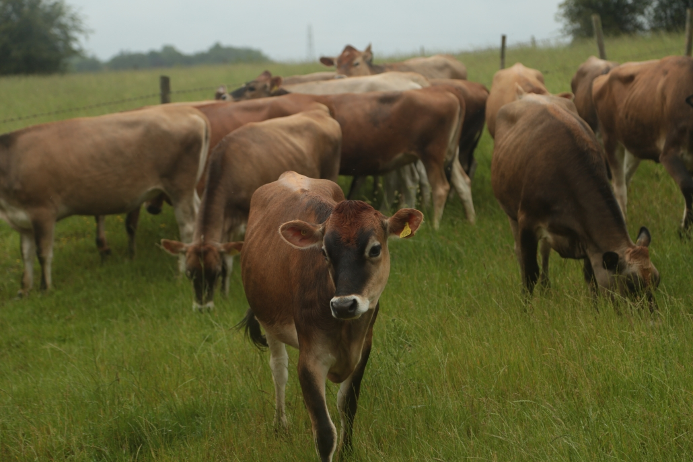

Ganaderos de Maripí
Maripí es un municipio colombiano ubicado en la provincia de Occidente en el departamento de Boyacá. Está situado a 41 km de la ciudad de Chiquinquirá, la capital de la provincia, y a 119 kilómetros de la ciudad de Tunja la capital del departamento. Hasta la década de 1990 su economía era de tipo agropecuario, pero desde entonces, se dio a conocer por el descubrimiento y explotación de nacimientos esmeraldiferos en su territorio.

gyr
se caracteriza por su adactaciòn al clima tropical, alta producciòn de leche y rusticidad.
📍 llano de palmas

Holstein
tambien es conocido como frisona, es reconocido mundialmente como la raza lechera mas productiva.
📍llano de palmas

Bragman
son conocidas principalmente conocidas por su resistencia al calor, adaptibilidad a condiciones dificiles y habilidad materna.
📍 llano de palmas

Barsina
Es una raza bovina de origen español, caracterizada por su pelaje blanco y pardo, a menudo con manchas rojizas, y por su productividad lechera .
📍 llano de palmas

Jersy
reconocida como una raza lechera , da a conocer por su pequeño tamaño y alta calidad de producto.
📍 llano de palmas

Pardo suizo
es una raza de ganado lechero de tamaño mediano a grande, conocida por su color marron y glisaceo y su buena produccion de leche .
📍 llano de palmas
Proceso de produccion
terneros
se demora 9 meses en dar cria.
cuando da cria.
se mantiene muy pendiente de la vaca y el ternerito pequeño
Clasificación
cuando la vaca este dando cria , en algunas se les ayuda y toca estar pendientes de ellas.
Concentración
En la cria se debe tener la mayor intencidad de cuidado
raza
depende de la raza en varias razas se crecen los terneros grandes en varias pequeños y duran en crecer por que el clima
agroturismo y visitas de fincas ganaderas.
🎓agroturismo y ganaderia informacion
Conoce las giras tecnicas ganaderas , ferias ganaderas , dias ganaderos.
👨🌾colaboracion.
Participa en en ayudar de lo que toque que hacer , y lleva un poco de proteina.
🍬 raza de terneros
Aprende a diferenciar la raza de terneros, y a diferencia de si vine bien o mal.